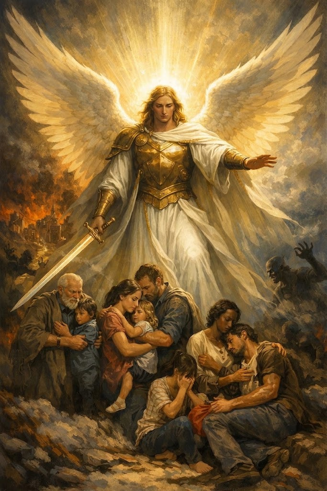

"Oh Miguel,
Cubra-me com tuas asas pois perdi meu escudo,
Defenda-me com tua espada.
Amém!"
Julia,
Sempre que se sentir acoada, com medo, assustada ou até mesmo sozinha venha aqui e recite a oração de São Miguel, com certeza a paz voltará ao seu coração!
Feliz Aniversário!
Dinho te ama "UM TANTÃO ASSIM DO MUNDO"